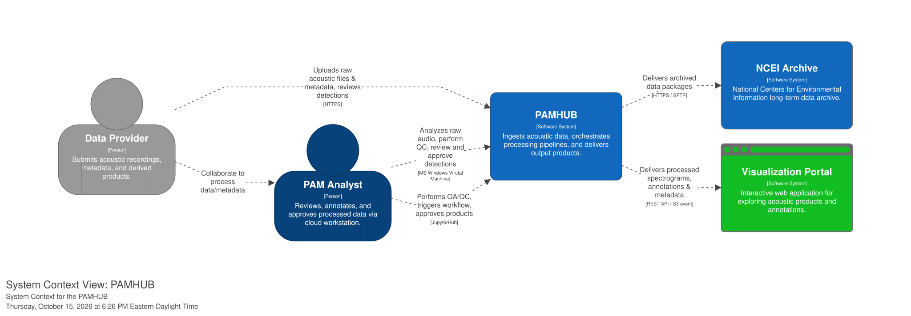
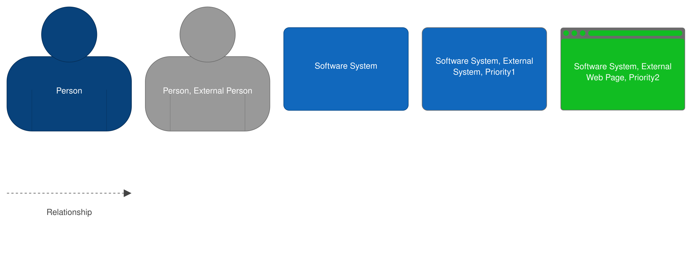
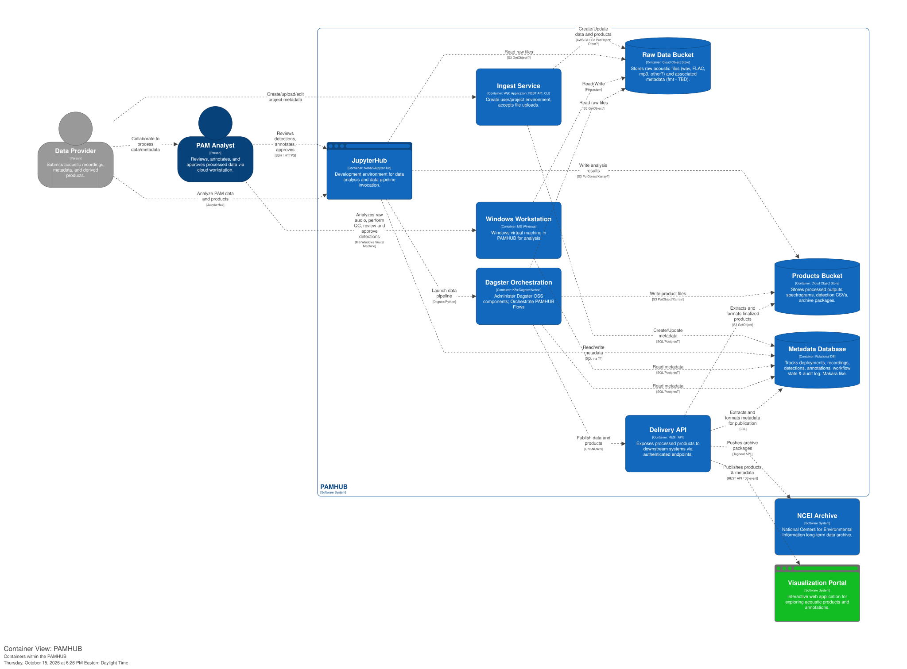
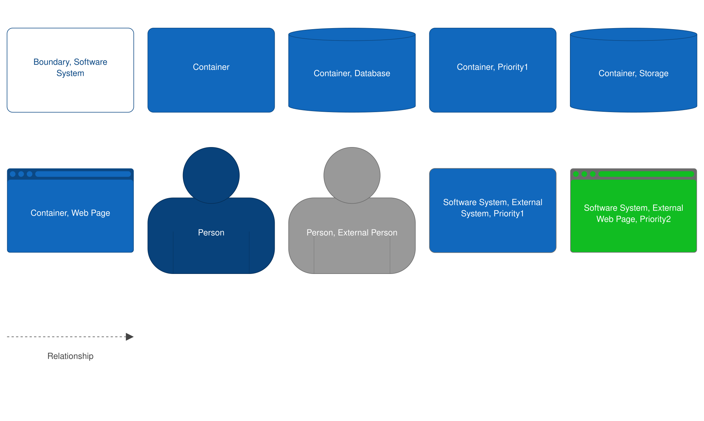
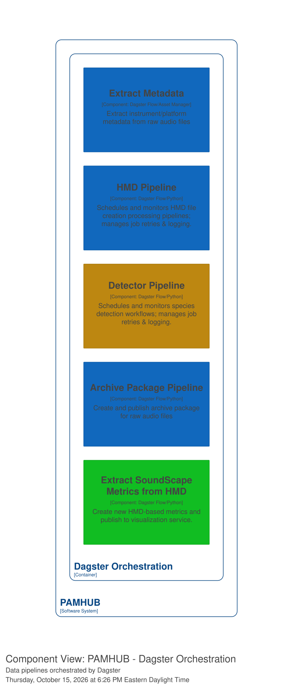
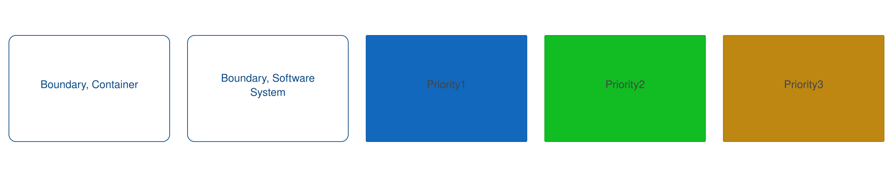
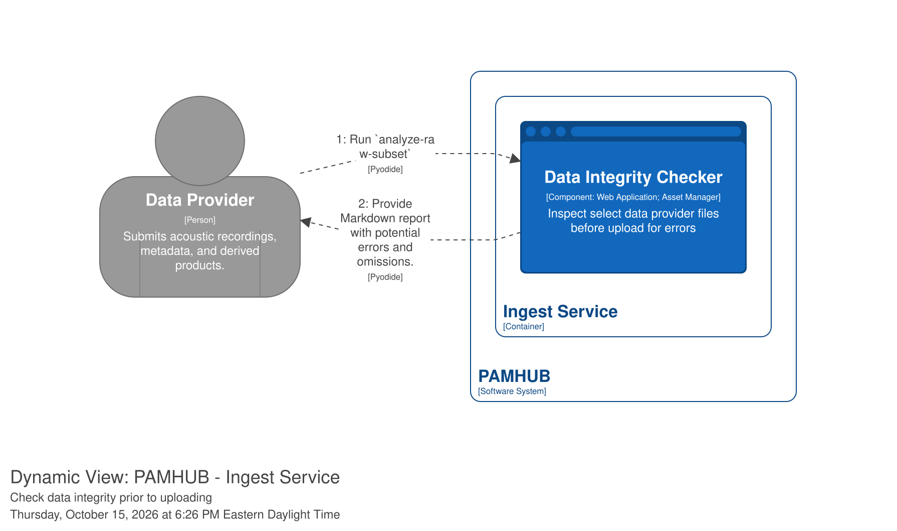
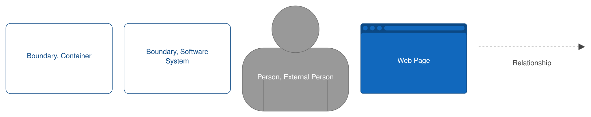
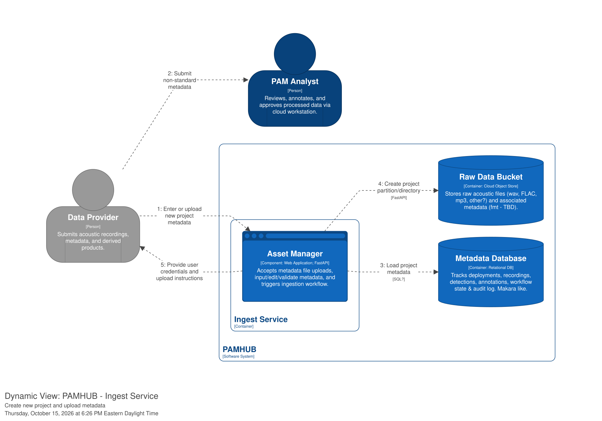
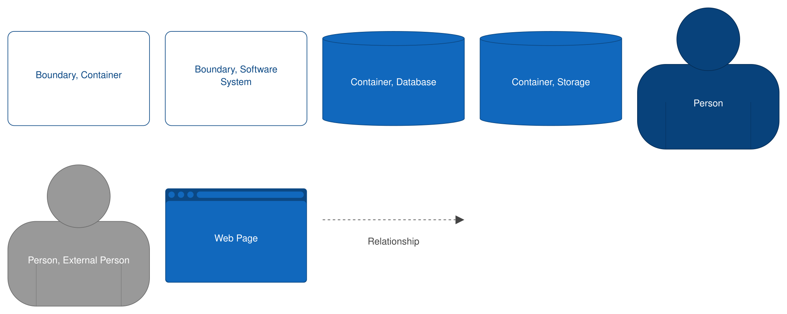

Architecture of the PAMHUB System
System Context


Decompose PAMHUB into High level functions (Containers)
Comments from Travis
- What is Ingest Service?
- COMMENT - Ingest service was intended as a generic container to capture the different funcitons related to create, read, updat, delete project/platform/deployment metadata. It also contains the AWS CLI which uploads files directly to a bucket. Arguably that's a stretch. More below on what I did to adjust. Removing the name Ingest and using Asset Manager as the main container and UI functionality.
- Not sure what user/project environment is
- COMMENT: This was intended to be the controller for anything that needs to be created in PAMHUB when a new user logs in to the system to initiate the process of creating a PAM project which contains 1..N deployments. includes: setting up the S3 directories, setting up anything needed on the FormsUI, Project ID, user authentication? It was a generic nod to things we might need if we're giving indivduals access to the system and don't want them to mess up other user's environments. Is there a better name? What do you call this set of fucnitons in the Research Workspace code?
- File uploads are accepted directly by S3, no separate service necessary there
- COMMENT: Noted. Separating the AWS CLI from Asset Manager.
- Ingest Service's file upload role overlaps with the form UI, which will be used to do light QC and trigger upload to S3
- COMMENT: Can we call this Asset Manager generally? I removed Ingest Service everywhere and replaced it with the Asset Manager stack you described below minus the metadataDB which remains separate for now. Since the DB needs to be accessed by other elements of the system beyond the Asset Manager, it seems separate. You can definitely convince me otherwise. Just want to make sure Cheryl understands.
- To the extent that Ingest Service represents the form UI, it's not really as distinct from the Metadata Database as shown
- COMMENT: OK, but I'm not really sure how to change that. I left it as is pending discussion.
- Nothing should be interacting with the Metadata Database directly via SQL since it's got a PostgREST API sitting in front of it specifically to serve that purpose.
- COMMENT: Noted. Changed everywhere.
- What is Delivery API?
- COMMENT: I removed Delivery API. But, there is still a question to be resolved. Where are dagster workflows initiated? Below you suggest that's part of Asset Manager but I understood that Cheryl initiates them currently from the Nebari/JupyterHub environment. I don't know if they are literally triggered by a notebook or if Nebari has another way to initiate jobs on a schedule or when triggered.
- Processed products are exposed directly via S3, no need for a separate service
- NOTED
- Dagster is likely the compontent that will be pushing archives to tugboat, not an API
- I agree for Metdata. Are we certain that Tugboat supports large data transfers?
- Extracting/formatting metadata and writing it to the Metadata Database would also likely be a Dagster job, not something an API would do
- COMMENT: This sounds like something to be discussed and decided in a way that everyone understands. For example, we will need a function to query the metadataDB, extract the relevant information, and create PyPAM config files. Are you saying that function should be the responsibility of the dagster-service called from a Jupyter notebook? If that's true, then the function probably needs to be a Python module installed in the user's jupyterhub environment. True? Who can write that?
- Not sure it should be a goal to be able to write to the metadata database via a Jupyter notebook?
- COMMENT: OK, TBD. Consider the use case where we run a species detector algorithm from jupyter notebook and want to store the annotations or any other results from the detector run. How would they be written to the DB?
- My sense for the components we need:
- S3 buckets for raw and processed data
- asset-manager-backed stack
- to be used for
- raw data QC/upload
- Some automated metadata extraction
- Manual metadata curation
- Batch processing job management (eventually)
- COMMENT: TBD pending discussion with Cheryl. I don't understand how this batch management differs from the dagster workflows.
- to consist of
- A form UI sitting on top of
- A PostgREST API sitting on top of
- A Postgres database
- COMMENT: Agreed. I didn't inlcude a container/component for the API but noted it in the labeling on the lines connecting the components.
- Suite of Dagster pipelines for data/metadata processing
- Maybe something like AWS Lambda for lighter weight jobs to be triggered via the form UI/dashboard
- COMMENT: What "lighter weight jobs" are you thinking?
- Windows workstation for manual QC, etc.
- JupyterHub for manual analysis, custom derived proudcts generation, etc.


Dagster Components


Note
These diagrams follow the C4 software diagramming conventions. Importantly, in these diagrams "Containers" are generic objects that "contain" functionality provided by software packages. They are simply a level of abstraction that allows for showing different levels of detail in different diagrams. THEY ARE NOT DOCKER CONTAINERS!
Dynamic Views
Check the integrity and structure of raw audio before upload


Upload project metadata


See User Guide
Use Cases
Table of Use Cases
| Implementation Priority | UC ID | Use Case write up | Related Issues | UC Completion Status |
|---|---|---|---|---|
| 1 | uc-012 | Create project metadata | NA | Incomplete |
| 1 | uc-011 | QC check prior to data upload | NA | Incomplete |
| 1 | uc-005 | Upload raw audio | NA | Incomplete |
| 1 | uc-002 | Create HMD files w PyPAM | NA | Incomplete |
| 1 | uc-007 | Quality control raw audio | NA | Incomplete |
| 1 | uc-001 | Archive at NCEI | NA | Incomplete |
| 1 | uc-013 | QC HMD files | NA | Incomplete |
| 2 | uc-004 | Visualize climatology | NA | Incomplete |
| 3 | uc-003 | Apply species detectors | NA | Incomplete |
| 3 | uc-009 | Integrate internal SoundScope visualization | NA | Incomplete |
| 3 | uc-014 | Archive HMD files at NCEI | NA | Incomplete |
| 4 | uc-006 | Visualize other | NA | On hold |
| 4 | uc-008 | Publish detections to PACM and/or NCEI | NA | Incomplete |
| 4 | uc-010 | Provide analysis environment to external PIs/Data providers | NA | Incomplete |
Data flow diagrams or other dynamic diagrams describing the use cases PAMHUB will address.
Complete List of Detectors to be supported
See also Issue 4
General Tools: - PAMGuard detectors: (included with the PAMGuard install)
Multispecies Baleen Whales: - LFDCS
North Atlantic Minke whale pulse-train detector:
- CNN-based detector for detecting pulse trains from N-A minke whale. It is has been used along the US east coast from the Gulf of Maine , down to the Caribbeans and Mexico. It has mostly been used on fixed mooring, but a student from USVI used it successfully on glider data.
- The version most people use is on the repo here: https://github.com/xaviermouy/minke-whale-detector. The repo includes a word document with documentation/instructions.
- There is also a linux version to help batch processing on the NEFSC containers they run locally (i.e. not on their cloud environment). It is the same thing as above but with a few more sh scripts and wrapers to facilitate queuing processing tasks, etc. This was very specific for NEFSC's needs, so using the version above may be more appropriate. Repo here: https://github.com/xaviermouy/minke-whale-detector_batch-processing_linux
General fish detector:
A generic fish sound detector - GitHub repo here: https://github.com/xaviermouy/FishSound_Finder - Documentation and tutorial here: https://fishsound-finder.readthedocs.io/en/latest/
Kurtosis detector:
- This is a versatile impulse detector that is being used for detecting pile driving sounds (used by NOAA in the SNE wind energy areas for monitoring pile driving activity), haddock knock trains (what I use for monitoring haddock in the Gulf of Maine), and Megaptcliks from humpback whales (what I used in our herring investigation in Stellwagen bank).
- The configuration file used with the detector dictates what signals/frequencies to look for
- The GitHub repo is here and has a Word doc with instructions to run it: https://github.com/xaviermouy/KurtosisDetector
Humpback detector:
- This is the package from Vincent Kather called AcoDet: https://github.com/vskode/acodet
- NOAA NEFSC is now using this detector in addition to LFDCS for humpbacks